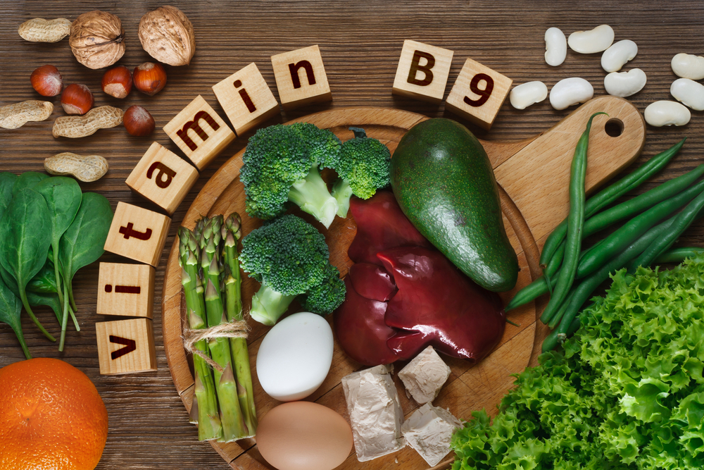
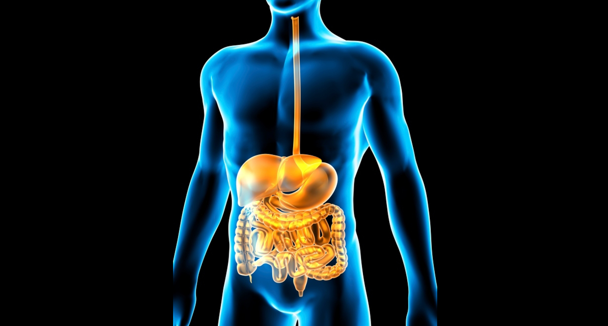

1. Сколько времени человек может продержаться без пищи?
2. Какой перерыв должен быть между приемом пищи и физической нагрузкой?
3. Что необходимо для роста и развития человека?

4. Что дает человеку энергию?
5. В каких продуктах содержится больше всего витамин С?

6. В каких продуктах содержится витамин В?
7. Сколько раз в день необходимо принимать пищу?

8. Что способствует правильному пищеварению?
9. Что лучше подойдет для перекуса?
10. Необходимо ли стараться есть в одно и то же время?